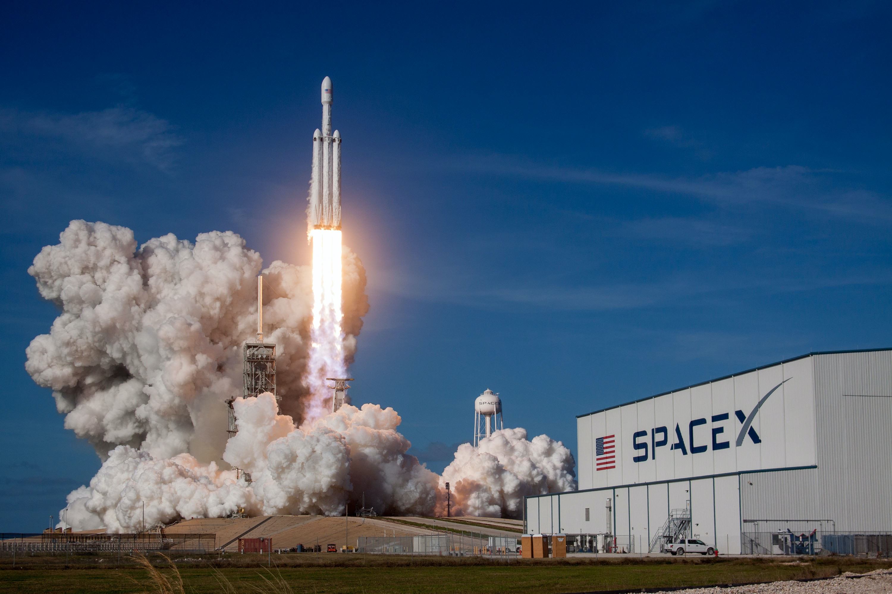
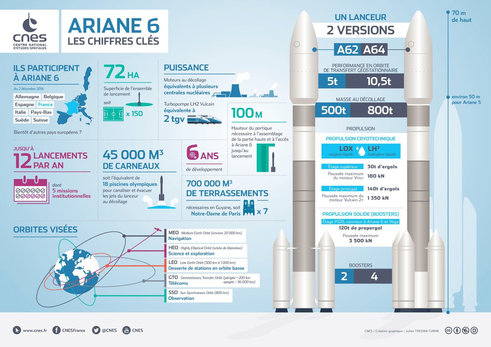

ArianeGroup est une coentreprise avec 50% d'Airbus et donc 50% d'entre eux sont égaux. Les opérateurs de satellites et les grands clients spatiaux ont considérablement réduit leurs investissements. De plus, les clients ne commandent que 5 satellites en 2018 soit 15 en 2016 alors que par rapport aux années précédentes, ils sont jusqu'à 20 satellites. Les opérateurs de satellites s’interrogent avec l’arrivée des minisatellites qui peuvent s'assembler. Elle a gelé ses investissements dans les satellites plus traditionnels et attend des certitudes économiques et techniques sur les performances des petits satellites. En 2019 Arianegroup a fait 2 760 754 000€ de chiffres d'affaires. Malheureusement, en 2020, en raison du Covid-19 Ariane a subi une très forte baisse, ce qui signifie qu'en plus de la concurrence, le chiffre d'affaires de 1 937 338 000€ ne permet pas à ArianeGroup d'être assuré de faire plus de bénéfices. ArianeGroup utilisent son budget essentiellement pour faire des lanceurs de fusées et pour préparer sa nouvelle fusée l'Ariane 6. Elle aimerait réduire leur coût de lancement de 40% comparé à celui de la fusée Ariane 5.
Les fournisseurs d'ArianeGroup sont des membres incontournables de sa communauté. Ils choisissent de travailler avec eux parce qu'ils excellent dans leur domaine et parce qu'ils partagent leurs valeurs et notre charte morale. Leurs contributions personnelles sont considérées comme un facteur clé du succès d'ArianeGroup. Les centres d'études et d'assemblage sont répartis sur les sites suivants : Le point des Mureaux qui assure la maîtrise d’œuvre des grands programmes spatiaux, militaires et responsable de l'intégration des étages principaux d'Ariane 5. L'établissement de Vernon dans l'Eure développe, produit et teste les systèmes de propulsion à ergols liquides. Ce sont principalement les moteurs Vulcain des fusées Ariane5 et Ariane6. Le point de Saint-Médard Centre produit également le perchlorate d'ammonium utilisé par les propulseurs d'appoint des fusées Ariane 5 et Ariane 6. Il fabrique également des générateurs de gaz utilisés par les motorships. L'établissement du Haillan conçoit et produit les moteurs à propergol solide des lanceurs et missiles d'ArianeGroup.

L'Ariane 5, conçue il y a 20 ans, ne peut plus rivaliser avec la Falcon 9. La fusée de SpaceX, la société d'Elon Musk en proposant des prix bas. Le groupe Ariane condamne la concurrence déloyale et la stratégie tarifaire de ses concurrents américains (NASA et le Pentagone). Ariane 6 peut rééquilibrer la situation : le démarrage de la phase de production confirme la compétitivité de Lanceurs européens. Le coût de production a été réduit de 40 % à 50 %. La nature du marché dans les années 2020 est encore très incertaine, en fonction du succès des microsatellites reconfigurables (comme le concept GeoNext de SES) et les services en orbite des plateformes commencent également à jouer un rôle. ArianeGroup devra y affronter SpaceX, ainsi que le lanceur Vulcan de la United Launch Alliance, le Proton et Angara de l'International Launch Service, le H-3 de Mitsubishi Heavy Industries et le GSLV Mk3 d'Isro. Chacun de ces systèmes a ses propres faiblesses qui peuvent affecter sa crédibilité à long terme.

Face à la concurrence de l'US SpaceX. ArianeGroup s'apprête à supprimer 600 emplois en France et en Allemagne d'ici fin 2022. Pour l'avenir, ArianeGroup a annoncé en 2018 qu'il supprimera plus de 2300 emplois d'ici 2025 en raison de la concurrence. ArianeGroup a donc été contraint de se lancer dans une chasse aux coûts inédites pour rendre son avenir poids lourd plus compétitif, en attendant l'arrivée d'une fusée réutilisable.
©COPYRIGHT 2021-Tous droits Réservés